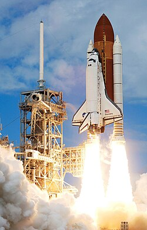

Az Egyesült Államok számos híres űrhajót fejlesztett ki, mint például a Space Shuttle és a Mars Rover.
Az Egyesült Államok az űrkutatás történetének egyik legmeghatározóbb szereplője. Az amerikai űrprogram évtizedek óta feszegeti a technológia határait, és olyan űreszközöket alkotott, amelyek örökre megváltoztatták az emberiség kapcsolatát a világűrrel.
A Space Shuttle program 1981 és 2011 között működött, és az első részben újrafelhasználható űrrepülőgépként forradalmasította az űrutazást. A Shuttle-ek segítségével épült fel a Nemzetközi Űrállomás, valamint számos műholdat és tudományos eszközt juttattak Föld körüli pályára. Ez a program bizonyította, hogy az űrrepülés nem csak egyszeri küldetés lehet, hanem rendszeres és tervezhető tevékenység.
A távoli bolygók felfedezésében az amerikai Mars roverek játszanak kulcsszerepet. A Spirit, Opportunity, Curiosity és Perseverance marsjárók a vörös bolygó felszínét kutatják, kőzetmintákat elemeznek és bizonyítékokat keresnek arra, hogy valaha létezhetett-e élet a Marson. Ezek a robotok az emberiség „szemei és kezei” egy másik bolygón.
Napjaink egyik legambiciózusabb projektje a SpaceX által fejlesztett Starship űrhajó. Ez a teljesen újrafelhasználható óriásűreszköz arra készült, hogy embereket és rakományt szállítson a Holdra, a Marsra és akár még távolabbi célpontokra is. A Starship célja, hogy az űrutazás olcsóbbá és gyakoribbá váljon, megnyitva az utat az emberiség többbolygós jövője felé.
Az amerikai űrhajók nem csupán technológiai csodák — a felfedezés, az innováció és az emberi kíváncsiság szimbólumai.